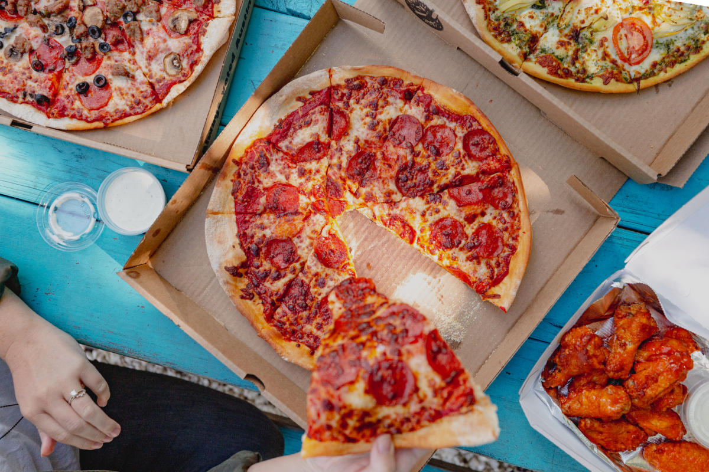

Homemade Sushi

Making homemade pizza dough can sound like a lot of work, but it’s so worth the bragging rights. The dough itself
requires few ingredients and just a little bit of rising and rest time. While you wait for the dough to be ready,
you can get to work prepping your tomato sauce, chopping fresh vegetables, or grating the cheese you’ll put on top.
Bake for 15 minutes, garnish with basil (or, let’s be real, more cheese), and enjoy showing off your
way-better-than-takeout creation.
Ingredients:
Dough
- 2 1/2 cups warm water
- 1 teaspoon sugar
- 2 teaspoons active dry yeast
- 7 cups all-purpose flour, plus more for dusting
- 6 tablespoons extra virgin olive oil, plus more for greasing
- 1 1/2 teaspoons kosher salt
Steps:
- Place the seaweed on a bamboo mat, then cover the sheet of seaweed with an even layer of prepared sushi rice.
Smooth gently with the rice paddle.
- Layer salmon, cream cheese, and avocado on the rice, and roll it up tightly. Slice with a sharp knife, and enjoy
with soy sauce.